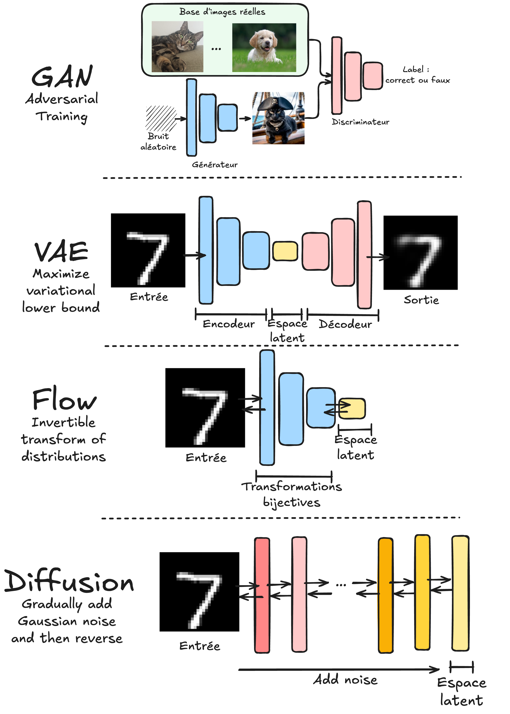

Introducción a los modelos generativos#
En los cursos anteriores, estudiamos diversos modelos de deep learning, incluyendo modelos discriminativos y generativos. Este curso se centra en los modelos generativos: explicaremos su funcionamiento, presentaremos ejemplos y proporcionaremos implementaciones prácticas.
Modelos discriminativos vs. generativos#
A continuación, se definen los modelos discriminativos y generativos:
Modelo discriminativo: Su objetivo es distinguir entre diferentes tipos de datos. Durante el entrenamiento, utiliza datos de entrada \(X\) y sus etiquetas asociadas \(Y\). Su finalidad es clasificar nuevos datos de entrada. Ejemplos: Clasificación (imágenes, texto, audio), detección de objetos y segmentación.
Modelo generativo: Aprende la distribución de probabilidad de los datos para generar nuevos ejemplos similares a los del conjunto de entrenamiento. A diferencia de los modelos discriminativos, no requiere etiquetas durante el entrenamiento. Hasta ahora, hemos visto modelos generativos en el curso 5 sobre PLN.
Nota: Los autoencoders clásicos no pertenecen a ninguna de estas categorías, ya que no predicen etiquetas ni aprenden la distribución de probabilidad de los datos de entrada. Sin embargo, los autoencoders variacionales (VAE), basados en una arquitectura similar, sí permiten aprender esta distribución.
Formalmente:
Los modelos discriminativos aprenden la probabilidad condicional \(P(X \mid Y)\).
Los modelos generativos aprenden \(P(X)\) (sin etiquetas) o \(P(X, Y)\) (con etiquetas).
Contenido del curso#
Este curso presenta las principales familias de modelos generativos, junto con implementaciones prácticas para cada una:
GAN (Generative Adversarial Networks): Cubiertos en los notebooks 2 y 3. Funcionan con dos modelos en competencia:
Un generador que crea datos similares a la distribución de entrenamiento.
Un discriminador que distingue entre datos reales y generados.
VAE (Variational Autoencoders): Abordados en los notebooks 4 y 5. A diferencia de los autoencoders clásicos, los VAE aprenden una distribución de probabilidad en el espacio latente (no una representación determinista).
Normalizing Flows: Explorados en los notebooks 6 y 7. Utilizan transformaciones biyectivas para convertir una distribución simple (ej. gaussiana) en la distribución de los datos de entrenamiento.
Modelos de difusión (Diffusion models): Tratados en los notebooks 4 y 5. Entrenan una red para reduccir progresivamente el ruido en una imagen. Se aplican iterativamente para generar imágenes a partir de ruido gaussiano.

Nota 1: Los modelos autoregresivos (como GPT) no se cubren aquí, ya que se detallaron en el curso 5 sobre PLN.
Nota 2: Este curso es una introducción a los modelos generativos. Para profundizar, consulta el curso Stanford CS236: